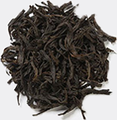
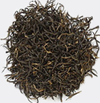
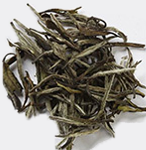

- 人世仿若一杯浊茶，一开始，刚被
- 开水浸泡的时候，我们都站在高处
- 或是被聚在高处或被放在高处！只
- 是在向更高处攀爬的过程中，不慎
- 地掉落了或者说是被记下来了。有
- 了第一个，渐渐的就有了第二个，
- 第三个，第四个吧最后真正站在高
- 处的寥寥无几只有那么几人。而大
- 多数人都被他们挤下高处或踩在脚
- 下，渐而浊茶叶就变成清茶了，世
- 间也仿佛一片清明了，到处歌舞升
- 平火树银花的。其实这时候的一切
- 只是披了繁花似锦的面罩了，虚
- 伪的上层一致的对下层宜扬他们的
- 信仰，被玩弄的蒙在鼓里的底层永
- 远对上面的一点小恩小惠感动不已
- 痛哭流涕。
- ————茶叶的故事
|茶|叶|


-
雨前西湖龙井茶
佛能洗心茶能染性。苦中有甜，甜中是苦，辛苦后甜，人生亦如是，如饮黑茶
推荐理由
雨前西湖龙井外形扁平挺秀、大小匀齐光滑，泡在杯中茶芽嫩绿成朵，茶汤鲜绿明亮，香气清高持久，滋味甘醇爽口，细细地观赏，慢慢地品饮，实在是一种高雅的享受。常年饮用有提神、明目、利尿、降脂、减肥、抗癌和防止衰老等保健功效。
-
八角亭普洱茶
佛能洗心茶能染性。苦中有甜，甜中是苦，辛苦后甜，人生亦如是，如饮黑茶
推荐理由
普洱茶属于黑茶外形色泽褐红，内质汤色红浓明亮，香气独特陈香，滋味醇厚回甘，叶底褐红。有生茶和热茶之分，生茶自然发酵，熟茶人工催熟。“越陈越香”被公认为是普洱茶区别其他茶类的最大特点，“香陈九碗芳兰气，品尽千年普洱情。”普洱茶是“可入口的古董”，不同于别的茶贵在新，普洱茶贵在“陈”往往会随时间逐渐升值。


-
最热
绿茶
- 大红袍 
- 红茶 
- 单从茶 
- 10ml/250ml80C
- 10ml/250ml100C
- 10ml/250ml100C
- 10ml/250ml80C
|都|匀|毛|尖|
-

都匀毛尖茶
-

单从茶乌龙茶
京东手机店铺
淘宝手机店铺